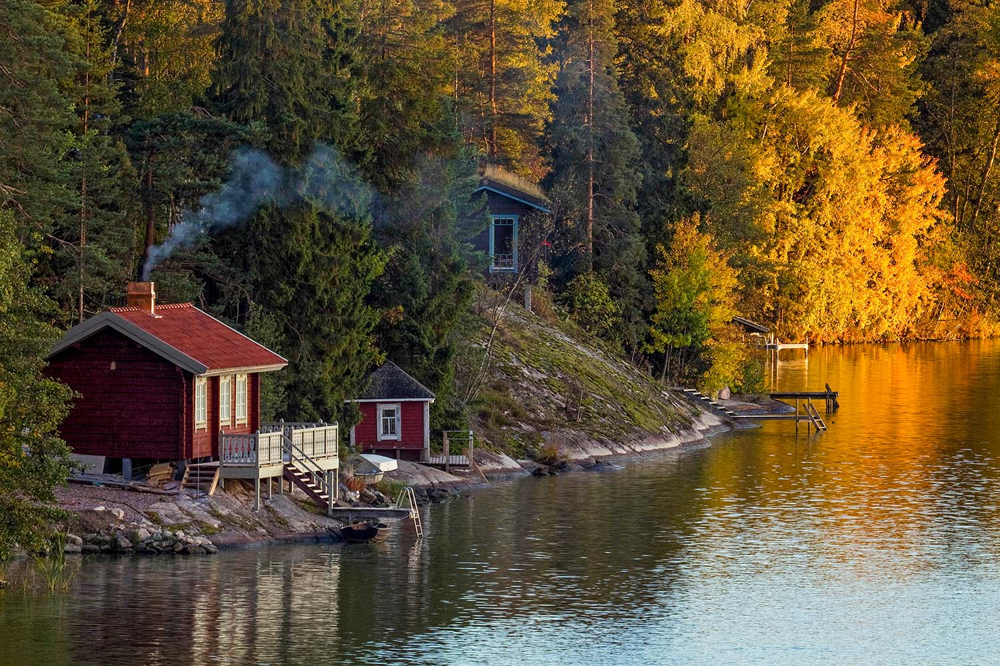
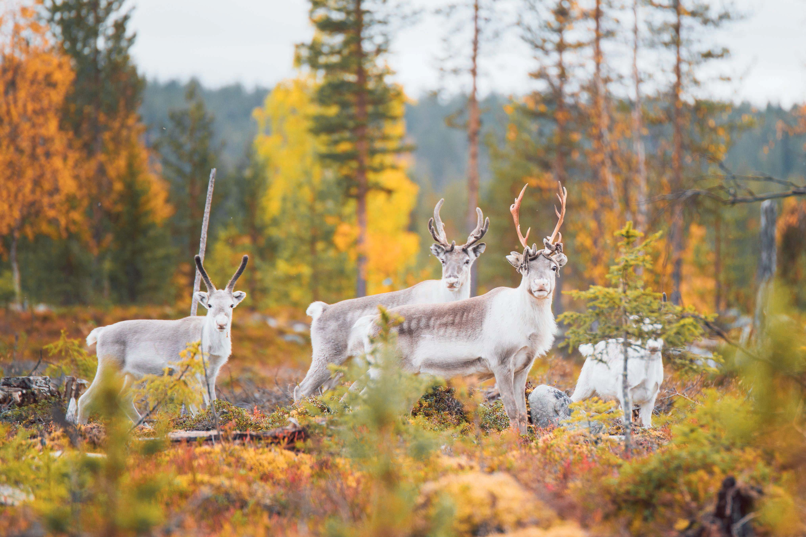
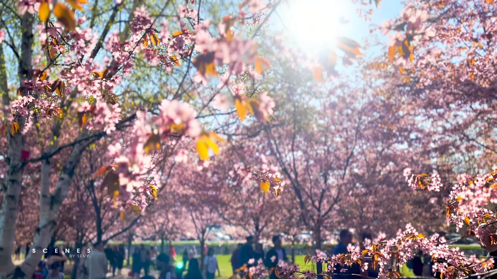

Summer
Pleasantly warm with 24 hours of light. In Southern Finland, the season typically starts in late May and lasts till mid-September. In Lapland, summer begins in April and ends in August. Average temperatures are around 20℃ / 68℉ in the southern and central areas of Finland and can become warmer.
Usually marked by rainer climate, especially in coastal areas. Autumn arrives around the last week of August in Lapland and about one month later in southwestern Finland. First snow typically falls in Lapland in September and elsewhere in October or November.
Autumn
Spring
Shortest yet distinct season in Finland with increasing sunlight. Beings early in April on the coast and the Archipelago. Later in April elsewhere, with the exception of northernmost Lapland where spring begins in early May.
Longest season in Finland, lasting for about 200 days in Lapland and 3 to 4 months in southern Finland. Temperatures are typically below 0℃ for most of the season and a tad bit warmer down south. During this time, Finland becomes a winter wonderland, with snow everywhere.